Bryan Wang
UWaterloo CS '26
Home
Photo Gallery
Blog (To Be Added)
Github
Linkedin
Email
Instagram
Welcome To My Photo Gallery
Come take a gander, there's lots to see.
Photo Gallery
Click on the photos to see the photo's properties and description.
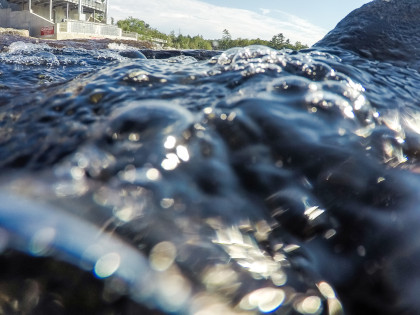
Waterfall
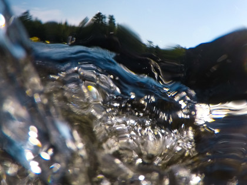
Waterfall
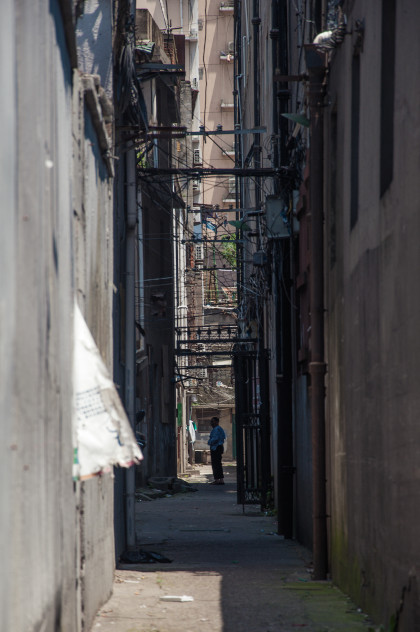
Xin Tian Di Alley
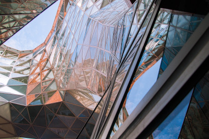
Shanghai World Expo Museum
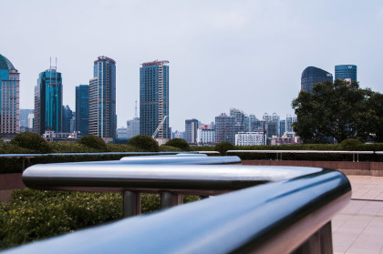
Skyline
Fish Feeding
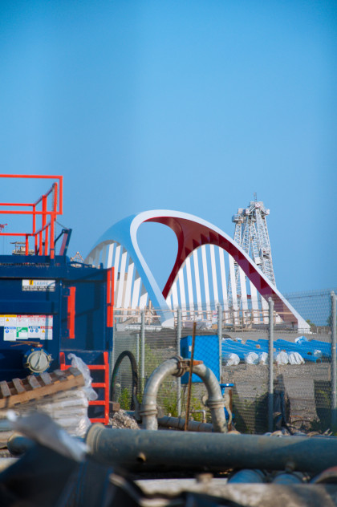
Construction Site
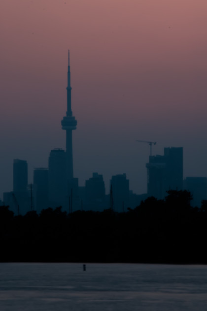
Toronto Skyline
Street Light Trails
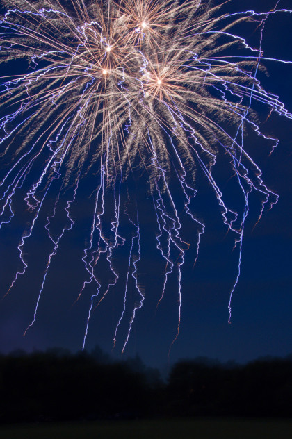
Fireworks
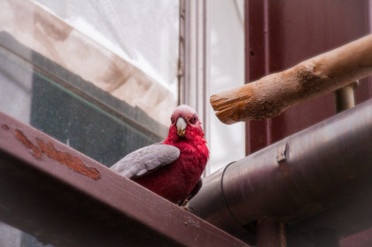
Another Bird
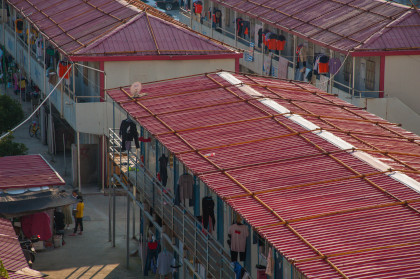
Worker's Houses
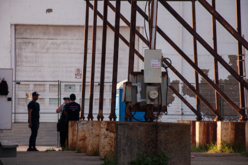
Break Time
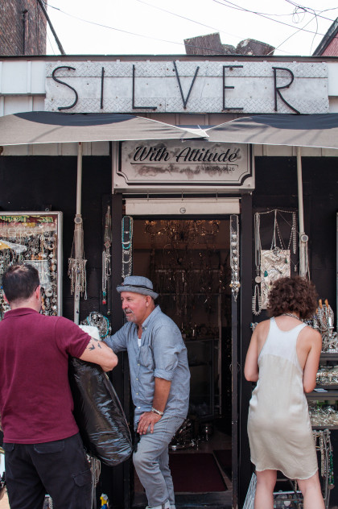
Silver (With Attitude)
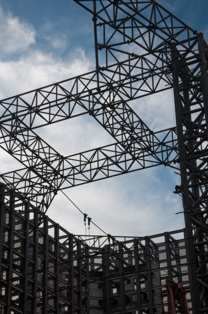
Scaffolding
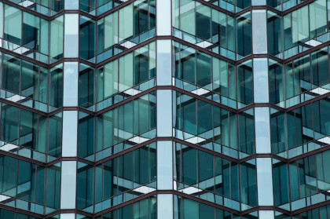
Mirrored Reflections
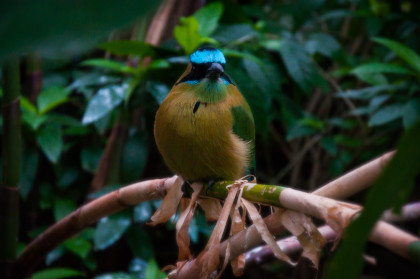
Bird
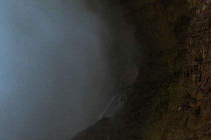
Behind the Falls
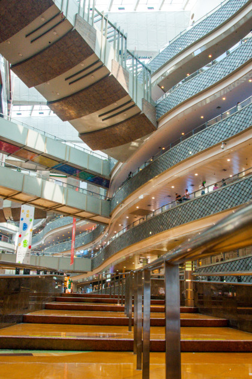
Super Brand Mall
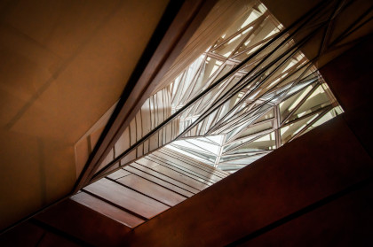
Shanghai World Expo Museum
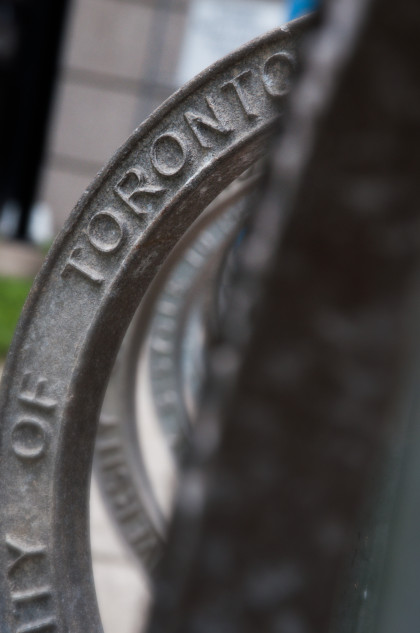
UofT Bike Rack
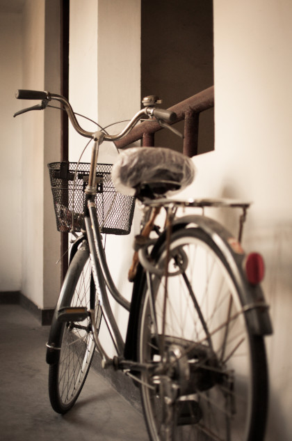
Old Bicycle
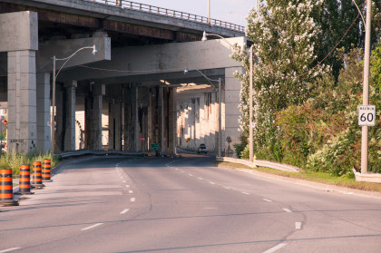
Gardiner Expressway
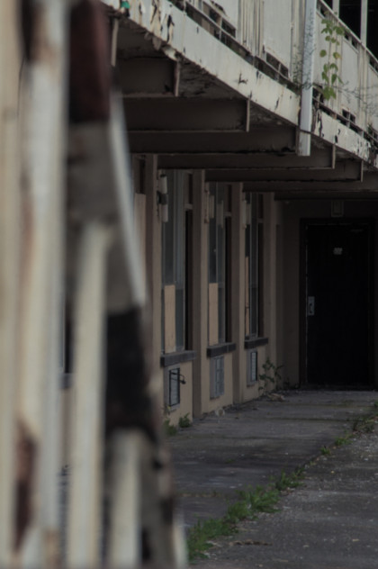
Dilapidated Motel
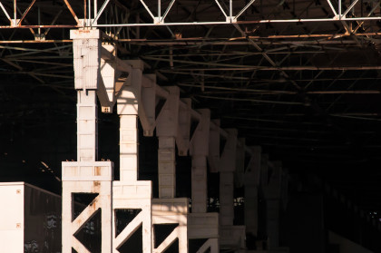
Industrial Complex
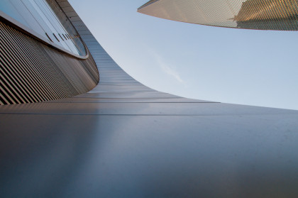
Shanghai Skyscrapers
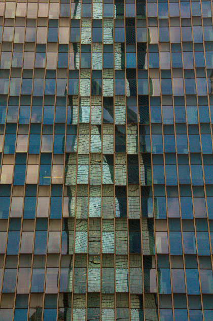
Reflection of Shanghai Tower
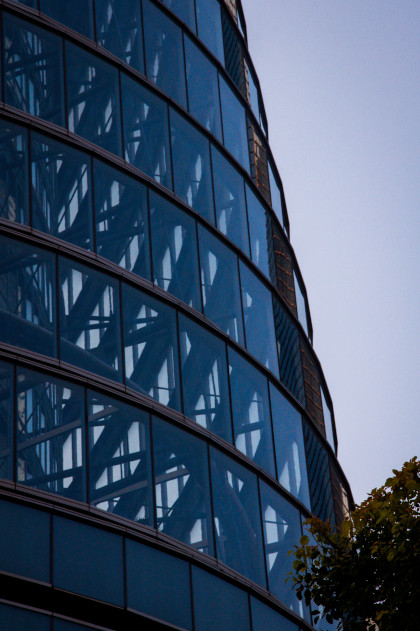
Shanghai Tower

{kind=link}
{kind=link}
{kind=link}
{kind=link}
{kind=link}
{kind=link}
{kind=link}
{kind=link}
{kind=link}
{kind=link}
{kind=link}
{kind=link}
{kind=link}
{kind=link}
{kind=link}
{kind=link}
{kind=link}
{kind=link}
{kind=link}
{kind=link}
{kind=link}
{kind=link}
{kind=link}
{kind=link}
{kind=link}
{kind=link}
{kind=link}
{kind=link}
{kind=link}